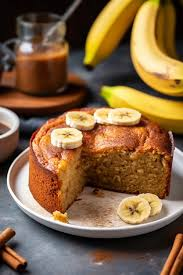

Receita de bolo de cenoura

Ingredientes:
- 3 cenouras médias raladas
- 4 ovos
- 1 xícara de óleo
- 2 xícaras de açúcar
- 2 xícaras de farinha de trigo
- 1 colher de fermento em pó
Modo de preparo:
- Em um liquidificador, bata as cenouras, os ovos e o óleo.
- Em uma tigela, misture o açúcar e a farinha de trigo.
- Adicione a mistura do liquidificador e mexa bem.
- Por último, adicione o fermento e misture delicadamente.
- Despeje a massa em uma forma untada e enfarinhada.
- Asse em forno médio (180°C) preaquecido por cerca de 40 minutos.
receita de bolo de banana

Ingredientes:
- 3 bananas maduras
- 3 ovos
- 1 xícara de açúcar
- 1/2 xícara de óleo
- 2 xícaras de farinha de trigo
- 1 colher de fermento em pó